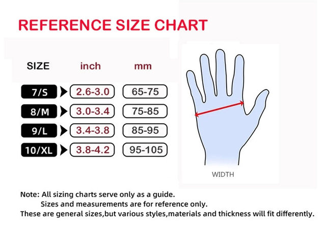
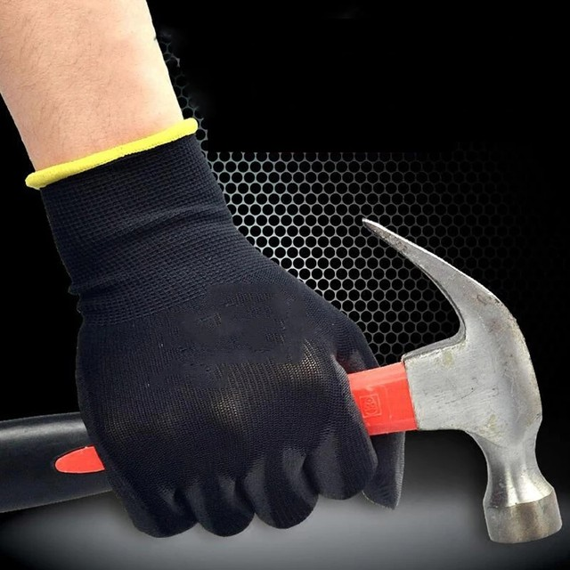
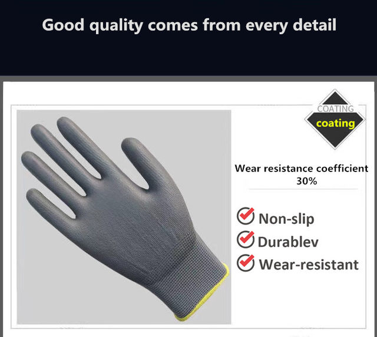
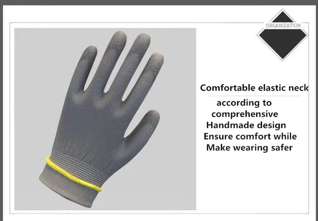
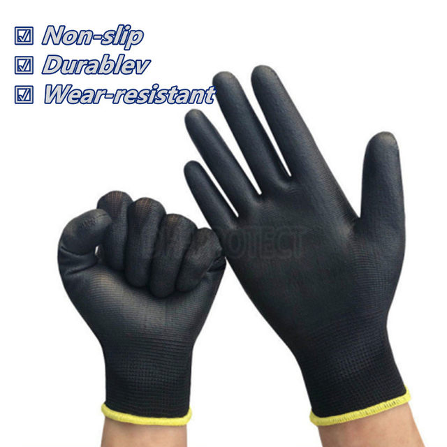
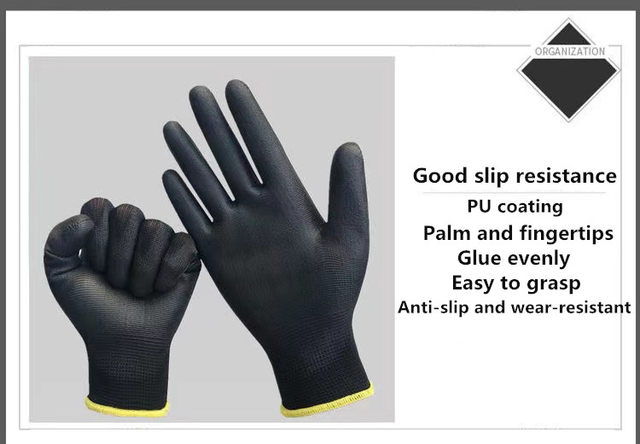
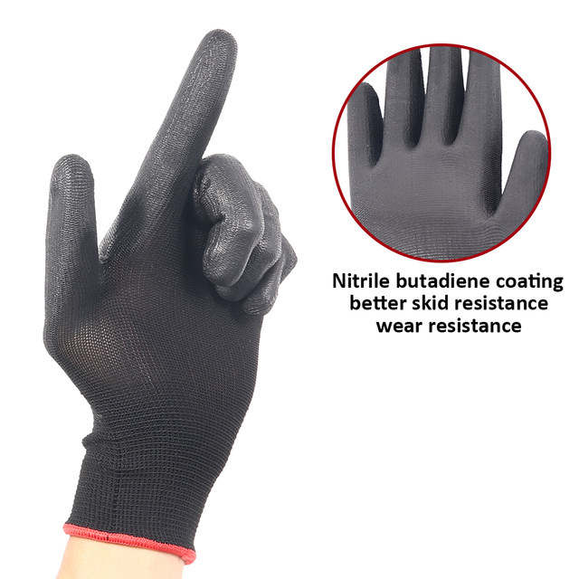
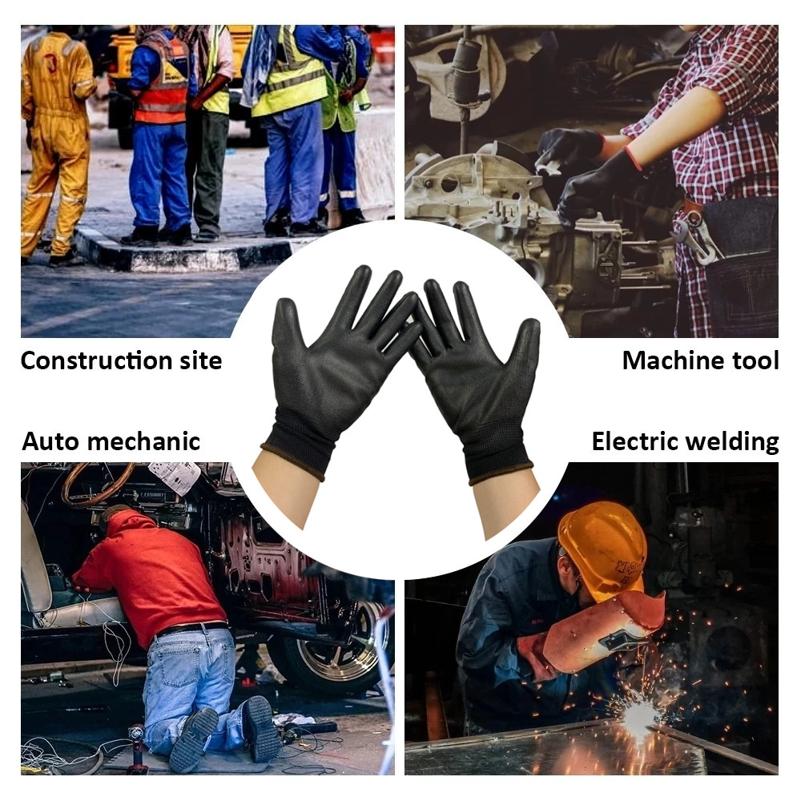
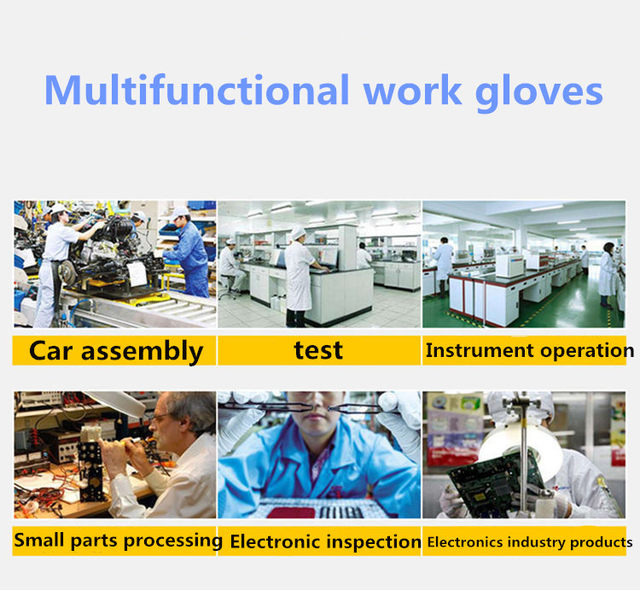
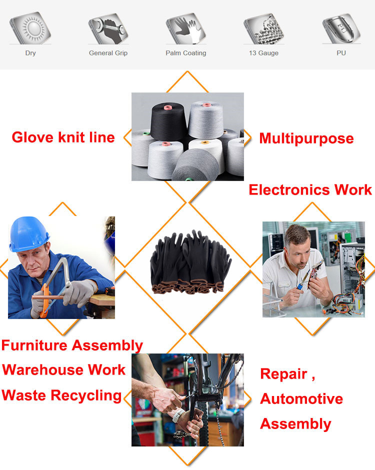

Nitrile safety coated work gloves PU and palm coated gloves safety gloves are suitable for construction and maintenance vehicles
Characteristic:
1). Good breathable and hand feeling, excellent abrasion resistance.
2). Exceptional dexterity and fit ,let us happy for working.
3). Superior durability, Machine Washable, Breathable to Reduce Sweat.
4). Upgrade Enhanced Version for special environmental style, it makes glove more flexble and user-friendly through special procedures, it is more comfortable to wear and super breathable, 100% Recommend ！98% Old customers re-placed the orders.
● Name: Breathable polyurethane gloves, work gloves, protective gloves
● Colour: black, grey
● Size: S / M / L / XL
● Material: nylon fabric
● Nylon fabric, coated (nylon: elastic and soft)
● Polyester fabric, lining (polyester fibre: elastic)
● Function: labour protection, maintenance, handling, comfort, non-slip, wear-resistant, anti-labour damage
● Note: Please choose the right size, otherwise we will send you the size you purchased. Thanks for understanding!
Features：
These safety gloves are perfect for carpenters, parts movers, construction workers, precision work, gardening work, rubbish collectors, assembly workers, etc.
rule:
10-30 pairs of work gloves









